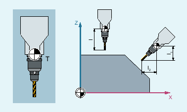

As the spatial orientation of the tool carrier and thus of the tool changes, its tool length components also change:
T | Tool carrier reference point |
I1, I2 | Tool length components |
After a reset, e.g. through manual setting or change of the tool carrier with a fixed spatial orientation, the tool length components also have to be determined again. The commands of G group 42 "tool carrier" are used for this purpose.
Element | Type | Meaning | |
|---|---|---|---|
| Address | Request tool carrier | |
| Number of the tool carrier | ||
| G command | Determine tool length components from the orientation of the current tool carrier | |
| G command | Determine tool length components from the orientation of the active frame | |
| G command | The TCOFRX/TCOFRY/TCOFRZ command assumes a tool oriented in the corresponding direction (X/Y/Z) and calculates the setting angles of the orientable tool carrier so that the tool in the active frame is oriented in the same direction. | |
| The tool oriented in the Z direction is aligned so that it is also oriented in the Z direction in the active frame. | ||
| The tool oriented in the Y direction is aligned so that it is also oriented in the Y direction in the active frame. | ||
| The tool oriented in the X direction is aligned so that it is also oriented in the X direction in the active frame. | ||